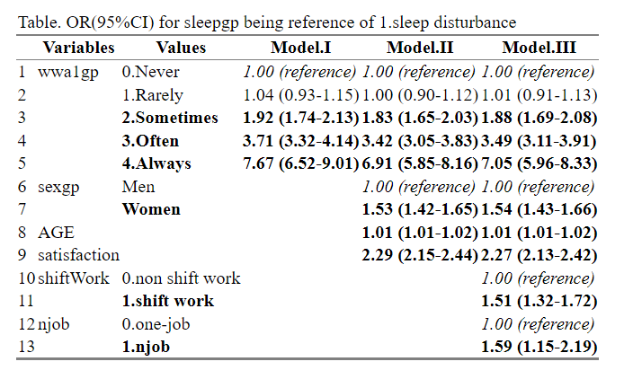

rm(list=ls())
#basic requirment
if(!require("tidyverse")) install.packages("tidyverse")
if(!require("htmlTable")) install.packages("htmlTable")
if(!require("broom")) install.packages("broom")
if(!require("labelled")) install.packages("labelled")
# packages from github
if(!require("devtools")) install.packages("devtools")
library(devtools)
install_github("jinhaslab/tabf", force = TRUE, quiet = TRUE)
library(tabf)8 보건학표 만들기 요약
데이터가 수집되었습니다. 이제 공중보건을 위한 두 종류의 표 만들기를 소개하겠습니다. 하나는 기본 크로스 테이블이고 다른 하나는 로지스틱 회귀 모델용 테이블입니다.
8.1 install package from github
tidyvere and htmlTable, and broom 가 데이터를 변환하고 표시하는데 자주 사용됩니다. devtools 은 “github”에 있는 함수를 불러오는데 사용됩니다.
install_github 을 통해 패키지를 설치하겠습니다.
8.2 데이터 준비
데이터 표를 만드는 실습은 6차 근로환경조사 자료를 통해 실습할 것입니다.. 자료는 안전보건공단, 근로환경조사 원시자료 사이트 (http://kosha.or.kr/kosha/data/primitiveData.do) 에서 신청할 수 있습니다..
데이터 표를 만드는 실습은 6차 근로환경조사 자료를 통해 실습할 것입니다.. 자료는 안전보건공단, 근로환경조사 원시자료 사이트 (http://kosha.or.kr/kosha/data/primitiveData.do) 에서 신청할 수 있습니다.. 데이터를 불러오겠습니다. 안전보건공단 홈페이에서 자료를 다운 받는게 원칙입니다. 다만 실습을 빠르게 진행하기 위해서, dspubs.org 페이지에 있는 파일을 이용하겠습니다.
kwcsData6th.rds
자신의 folder에 data 라는 folder가 있는지 확인하십시오. data라는 폴더에 다운로드하고, 불러오도록 하겠습니다.
url <- "https://raw.githubusercontent.com/jinhaslab/opendata/main/kwcs/kwcsData6th.rds"
download.file(url, "data/tutorKWCS.rds")
kwcs = readRDS("data/tutorKWCS.rds")8.2.1 근로환경조사 기본 변수 생성 (선택)
data manipulation에서 실습한 내용을 통해 변수를 실습을 위한 변수를 생성해 보겠습니다. 이에 대한 자세한 과정은 이전 챔터에 있습니다.
# data manip function
Likert5f = function(x){dplyr::recode(as.numeric(x),
"4.Always","3.Often","2.Sometimes", "1.Rarely","0.Never" )}
# data step start ----------
dat1 = kwcs %>%
filter(AGE <70) %>%
filter(AGE >18) %>%
# sleep --------
filter(!is.na(sleep1)&!is.na(sleep2)&!is.na(sleep3)) %>%
filter(sleep1 %in% c(1:5),
sleep2 %in% c(1:5),
sleep3 %in% c(1:5)) %>%
mutate(sleep1in = 5-sleep1,
sleep2in = 5-sleep2,
sleep3in = 5-sleep3
) %>%
mutate(sleepgp = case_when(
sleep1in + sleep2in+ sleep3in >=6 ~ "1.sleep disturbance",
TRUE ~ "0.non distrubance"
)) %>%
# work live balances -------------
filter(!is.na(wbalance), !is.na(wwa1), !is.na(wwa2), !is.na(wwa3), !is.na(wwa4), !is.na(wwa5)) %>%
filter(!is.na(wbalance)) %>%
mutate(wbalancegp = case_when(
wbalance %in% c(1, 2) ~ "0.balance",
TRUE ~ "1.non balance"
)) %>%
mutate(wwa1gp=Likert5f(wwa1), wwa2gp=Likert5f(wwa2), wwa3gp=Likert5f(wwa3),
wwa4gp=Likert5f(wwa4), wwa5gp=Likert5f(wwa5),
) %>%
# job and sex, agegp ----------
filter(!is.na(job1))%>%
filter(job1 %in% c(1, 2, 3)) %>%
mutate(sexgp = case_when(
TSEX ==1 ~ "Men",
TRUE ~ "Women"
)) %>%
mutate(agegp = case_when(AGE <25 ~ "<25", AGE <30 ~ "<30", AGE <35 ~ "<35",
AGE <40 ~ "<40", AGE <45 ~ "<45", AGE <50 ~ "<50",AGE <55 ~ "<55", AGE <60 ~ "<60",
TRUE ~ "\u226560" # 나머지는 모두 >65 (\u2265는 크거나 같다는 symbol)
)) %>%
filter(!is.na(edu)) %>% filter(edu %in% c(1:7)) %>%
mutate(edugp = case_when(
edu %in% c(1:3) ~ "2.middle school or below",
edu %in% c(4 ) ~ "1.high school",
edu %in% c(5:7) ~ "0.university or more"
)) %>%
mutate(njob=case_when(
job1 %in% c(2, 3) ~ "1.njob",
TRUE ~ "0.one-job")) %>%
# pains back -----------
mutate(backpain= case_when(
heal_prob1==1 ~ "pain",
TRUE ~ "no-pain")) %>%
# emp_type,working hours, shiftwork, work life balance -------
filter(!is.na(emp_type)) %>%
filter(emp_type %in% c(1:4)) %>%
mutate(empgp = case_when(
emp_type ==1 ~ "2.own-account worker",
emp_type ==2 ~ "1.employer/self-employer",
emp_type ==3 ~ "0.paid-worker",
emp_type ==4 ~ "3.unpaind family work"
)) %>%
filter(!is.na(wtime_week)) %>%
mutate(whgp=case_when(
wtime_week < 35 ~ "<35",
wtime_week < 40 ~ "<40",
wtime_week < 52 ~ "<52",
wtime_week < 60 ~ "<60",
TRUE ~ "\u226560",
)) %>%
filter(!is.na(wtime_length5)) %>%
filter(wtime_length5 %in% c(1, 2)) %>%
mutate(shiftWork = case_when(
wtime_length5 ==1 ~ "1.shift work",
TRUE ~ "0.non shift work"
)) %>%
filter(!is.na(wtime_resilience)) %>%
mutate(shortReturn = case_when(
wtime_resilience ==1 ~ "1.short return",
TRUE ~ "0.non short return"
)) %>%
filter(!is.na(satisfaction)) %>%
filter(satisfaction %in% c(1:4)) %>%
mutate(satisInv = 5-satisfaction) %>%
mutate(shiftShort=case_when(
shiftWork == "1.shift work" & shortReturn == "1.short return" ~ "3.shift work with short return",
shiftWork == "1.shift work" & shortReturn != "1.short return" ~ "2.shift work",
shiftWork != "1.shift work" & shortReturn == "1.short return" ~ "1.day work with short return",
shiftWork != "1.shift work" & shortReturn != "1.short return" ~ "0.day work",
)) 코드를 간단히 하기 위해 dat1을 저장하겠습니다.
saveRDS(dat1, "data/kwcsData1.rds")dat1 = readRDS("data/kwcsData1.rds")8.3 변수 선정 그리고 표 1
변수는 종속변수, 독립변수로 나눌수 있고, 독립변수는 성격에 따라 연속변수와 명목변수로 나눌 수 있습니다. 그렇게 구별해 보겠습니다.
stratas = c("sleepgp")
catVars = c("wwa1gp", "shortReturn","shiftWork" , "njob", "sexgp", "edugp", "empgp")
conVars = c("AGE","satisfaction")tabf() 은 우리가 설정한 것에 따라 표1을 만들어 줍니다. htmlTable()은 붙여 넣기 좋게 화면에 출력해 줍니다.
tab1 = tabf(dat1=dat1, stratas = stratas, catVars = catVars, conVars = conVars)
tab1# A tibble: 22 × 5
variables values `0.non distrubance` `1.sleep disturbance` p.value
<chr> <chr> <chr> <chr> <chr>
1 "AGE" "" 46.8±12.4 49.7±11.9 "<0.00…
2 "wwa1gp" "Never" 12222 (94.7%) 684 (5.3%) "<0.00…
3 "" "Rarely" 12316 (94.5%) 714 (5.5%) ""
4 "" "Sometimes" 9112 (90.3%) 981 (9.7%) ""
5 "" "Often" 3456 (82.8%) 717 (17.2%) ""
6 "" "Always" 634 (70.0%) 272 (30.0%) ""
7 "satisfaction" "" 2.1±0.5 2.4±0.6 "<0.00…
8 "shortReturn" "non short … 36183 (92.5%) 2927 (7.5%) "<0.00…
9 "" "short retu… 1557 (77.9%) 441 (22.1%) ""
10 "shiftWork" "non shift … 35056 (91.9%) 3073 (8.1%) "<0.00…
# ℹ 12 more rowshtmlTable()을 이용해서 보기 좋게 만들어 보겠습니다.
tab1 %>%
setNames(c("", "", "None", "Disturbance", "P value")) %>%
htmlTable(
cgroup = c("", "Sleep disturbance", ""),
n.cgroup = c(2, 2, 1),
tfoot = "P value calculated by Chisq-Test and T-Test",
rnames = FALSE,
caption = "Basic Characteristics according to Sleep disturbance"
) | Basic Characteristics according to Sleep disturbance | ||||||
| Sleep disturbance | ||||||
|---|---|---|---|---|---|---|
| None | Disturbance | P value | ||||
| AGE | 46.8±12.4 | 49.7±11.9 | <0.001 | |||
| wwa1gp | Never | 12222 (94.7%) | 684 (5.3%) | <0.001 | ||
| Rarely | 12316 (94.5%) | 714 (5.5%) | ||||
| Sometimes | 9112 (90.3%) | 981 (9.7%) | ||||
| Often | 3456 (82.8%) | 717 (17.2%) | ||||
| Always | 634 (70.0%) | 272 (30.0%) | ||||
| satisfaction | 2.1±0.5 | 2.4±0.6 | <0.001 | |||
| shortReturn | non short return | 36183 (92.5%) | 2927 (7.5%) | <0.001 | ||
| short return | 1557 (77.9%) | 441 (22.1%) | ||||
| shiftWork | non shift work | 35056 (91.9%) | 3073 (8.1%) | <0.001 | ||
| shift work | 2684 (90.1%) | 295 (9.9%) | ||||
| njob | one-job | 37471 (91.9%) | 3317 (8.1%) | <0.001 | ||
| njob | 269 (84.1%) | 51 (15.9%) | ||||
| sexgp | Men | 17892 (93.1%) | 1327 (6.9%) | <0.001 | ||
| Women | 19848 (90.7%) | 2041 (9.3%) | ||||
| edugp | university or more | 19597 (92.9%) | 1502 (7.1%) | <0.001 | ||
| high school | 14943 (91.9%) | 1318 (8.1%) | ||||
| middle school or below | 3200 (85.4%) | 548 (14.6%) | ||||
| empgp | paid-worker | 25786 (92.4%) | 2122 (7.6%) | <0.001 | ||
| employer/self-employer | 2539 (91.7%) | 229 (8.3%) | ||||
| own-account worker | 8359 (90.5%) | 880 (9.5%) | ||||
| unpaind family work | 1056 (88.5%) | 137 (11.5%) | ||||
| P value calculated by Chisq-Test and T-Test | ||||||
8.4 로지스틱 회귀 분석
로지스틱 회귀 분석은 오즈비와 95% 신뢰구간을 구하는데 사용합니다. 여기서는 수면장애의 오즈를 “일을 하지 않을 때에도 걱정하는” 정도에 따라 분석해 보겠습니다. 첫번째 모델을 걱정 변수만 넣어서, 두번째 모델은 연령, 성별, 근무 만족도를 넣어서, 3번째는 교대 근무와, n-job 여부를 넣어서 분석하겠습니다.
mod1 = dat1 %>%
glm(data=.,family="binomial",formula = sleepgp == "1.sleep disturbance"
~ wwa1gp)
mod2 = dat1 %>%
glm(data=.,family="binomial",formula = sleepgp == "1.sleep disturbance"
~ wwa1gp + AGE + sexgp +satisfaction)
mod3 = dat1 %>%
glm(data=.,family="binomial",formula = sleepgp == "1.sleep disturbance"
~ wwa1gp + AGE + sexgp +satisfaction + shiftWork + njob)각 모델이 잘 이루어졌는지 확인해 봅니다 . 로지스틱 회귀분서의 자세한 내용은 통계학 강의를 꼭 참고해 주세요!.
summary(mod1)
Call:
glm(formula = sleepgp == "1.sleep disturbance" ~ wwa1gp, family = "binomial",
data = .)
Deviance Residuals:
Min 1Q Median 3Q Max
-0.8450 -0.4522 -0.3357 -0.3300 2.4238
Coefficients:
Estimate Std. Error z value Pr(>|z|)
(Intercept) -2.88303 0.03929 -73.378 <2e-16 ***
wwa1gp1.Rarely 0.03526 0.05500 0.641 0.521
wwa1gp2.Sometimes 0.65426 0.05170 12.655 <2e-16 ***
wwa1gp3.Often 1.31024 0.05681 23.062 <2e-16 ***
wwa1gp4.Always 2.03679 0.08245 24.704 <2e-16 ***
---
Signif. codes: 0 '***' 0.001 '**' 0.01 '*' 0.05 '.' 0.1 ' ' 1
(Dispersion parameter for binomial family taken to be 1)
Null deviance: 23305 on 41107 degrees of freedom
Residual deviance: 22258 on 41103 degrees of freedom
AIC: 22268
Number of Fisher Scoring iterations: 5oddsf() 라는 함수로 결과를 확인해 보겠습니다 .
oddsf(mod1, mod2, mod3) %>% htmlTable()| Variables | Values | Model.I | Model.II | Model.III | |
|---|---|---|---|---|---|
| 1 | wwa1gp | 0.Never | 1.00 (reference) | 1.00 (reference) | 1.00 (reference) |
| 2 | wwa1gp | 1.Rarely | 1.04 (0.93-1.15) | 1.00 (0.90-1.12) | 1.01 (0.91-1.13) |
| 3 | wwa1gp | 2.Sometimes | 1.92 (1.74-2.13) | 1.83 (1.65-2.03) | 1.88 (1.69-2.08) |
| 4 | wwa1gp | 3.Often | 3.71 (3.32-4.14) | 3.42 (3.05-3.83) | 3.49 (3.11-3.91) |
| 5 | wwa1gp | 4.Always | 7.67 (6.52-9.01) | 6.91 (5.85-8.16) | 7.05 (5.96-8.33) |
| 6 | sexgp | Men | 1.00 (reference) | 1.00 (reference) | |
| 7 | sexgp | Women | 1.53 (1.42-1.65) | 1.54 (1.43-1.66) | |
| 8 | AGE | 1.01 (1.01-1.02) | 1.01 (1.01-1.02) | ||
| 9 | satisfaction | 2.29 (2.15-2.44) | 2.27 (2.13-2.42) | ||
| 10 | shiftWork | 0.non shift work | 1.00 (reference) | ||
| 11 | shiftWork | 1.shift work | 1.51 (1.32-1.72) | ||
| 12 | njob | 0.one-job | 1.00 (reference) | ||
| 13 | njob | 1.njob | 1.59 (1.15-2.19) |
예상한대로 결과가 나왔다면 oddsTabf()를 이용해서 복사 붙여 넣기를 하겠습니다.
oddsTabf(mod1, mod2, mod3)